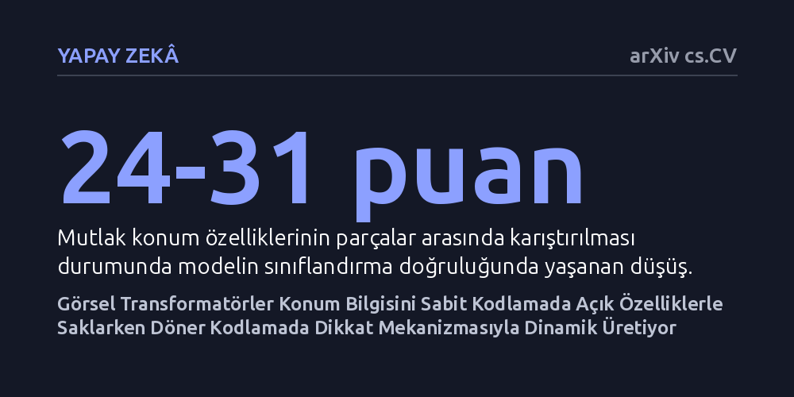

YAPAY-ZEKA · arXiv cs.CV · 2026-10-15
Araştırmacılar, görsel transformatör modellerinde farklı konum kodlama yöntemlerinin uzamsal bilgiyi içeride nasıl temsil ettiğini inceledi. Sabit kodlamanın konumu doğrudan açık özelliklerde sakladığı, döner kodlamanın ise bu bilgiyi dikkat mekanizmasında dinamik biçimde kurup gerektiğinde yeniden inşa ettiği bulundu.
Görsel yapay zekânın resimdeki konumu anlama biçimi seçilen kodlama türüne göre kökten değiştiği için, modellere yapılacak müdahalelerin ve hata düzeltmelerinin bu mimari farklar gözetilerek tasarlanması gerekir.

Görsel transformatörler, tıpkı metin işleyen büyük dil modelleri gibi, resimleri küçük parçalara yani 'yamalara' bölerek analiz eder. Ancak bir nesnenin parçalarını doğru bağlamda tanıyabilmesi için bu parçaların resimdeki gerçek uzamsal konumlarını da bilmesi şarttır. Bunu sağlamak üzere modellere konum kodlamaları eklenir; fakat bu kodlamaların yapay zekânın derin iç katmanlarında nasıl bir temsil dünyası kurduğu uzun süredir bir kara kutu olarak kalmıştı.
Araştırmacılar, modellerin yalnızca testlerdeki başarı oranını ölçmekle yetinmeyip iç mekanizmalarına inmeyi amaçladı. Çünkü yapay zekânın görsel dünyayı nasıl haritalandırdığını anlamak, modellerin yaptığı uzamsal hataları tespit etmek ve sistemleri daha güvenilir kılmak açısından büyük önem taşıyor.
Çalışmada yaygın kullanılan iki temel yöntem karşılaştırıldı: parçalara sabit bir konum etiketi ekleyen Mutlak Konum Kodlaması (APE) ile parçaların birbirine göreceli konumunu vektörleri döndürerek işleyen Döner Konum Kodlaması (RoPE). Araştırma ekibi modelleri dışarıdan gözlemlemek yerine 'mekanistik analiz' yaklaşımıyla iç sinirsel devreleri doğrudan inceledi.
APE kullanan modellerde gizli konum temsillerini ayrıştırmak için seyrek otokodlayıcılar kullanıldı ve satır ile sütunlara özgü özellikler çıkarıldı. RoPE kullanan modellerde ise satır ve sütun rotasyonları cerrahi bir müdahaleyle geçici olarak kapatıldı; bu müdahalelerin ardından modelin konum bilgisini nasıl kaybettiği ve hangi dikkat başlıklarının bu bilgiyi onarmaya çalıştığı ölçüldü.
Elde edilen sonuçlar, iki yöntemin konumu tamamen farklı iç mekanizmalarla temsil ettiğini ortaya koydu. APE kullanan modeller, konum bilgisini doğrudan açık ve nedensel özellikler halinde saklıyor. Nitekim araştırmacılar bu konum özelliklerini yamalar arasında rastgele karıştırdığında, modelin nesneleri doğru tanıma oranı 24 ila 31 puan birden sert bir düşüş yaşadı.
Buna karşılık RoPE kullanan modellerde konum bilgisi sabit bir özellik gibi tutulmuyor; dikkat katmanlarının içinde anlık olarak üretiliyor. Deneylerde satır veya sütun rotasyonları devre dışı bırakıldığında konum bilgisi silindi; ancak rotasyonlar yeniden açıldığında eksenlere özelleşmiş dikkat başlıklarının bu bilgiyi kendi içinde kısmen baştan inşa edebildiği gözlendi.
Bu bulgular, konum kodlaması tercihinin basit bir teknik ayrıntı olmadığını gösteriyor. Yazarların ifadesiyle, konum kodlaması seçimi uzamsal bilginin model içinde nasıl düzenlendiğini ve işlendiğini kökten değiştiriyor. Biri konumu sabit bir etiket kütüphanesi olarak taşırken, diğeri her dikkat işleminde bu ilişkiyi dinamik olarak yeniden kuruyor.
Bu mekanik farkların ortaya konması, ileride görsel modellerde nesnelerin konumunu karıştıran hataları düzeltmek için kritik bir zemin oluşturuyor. Gelecekte tüm modeli baştan eğitmek yerine, yalnızca uzamsal bilgiyi yeniden inşa eden özel dikkat başlıklarına hedefe yönelik doğrudan müdahaleler yapılabilecek.